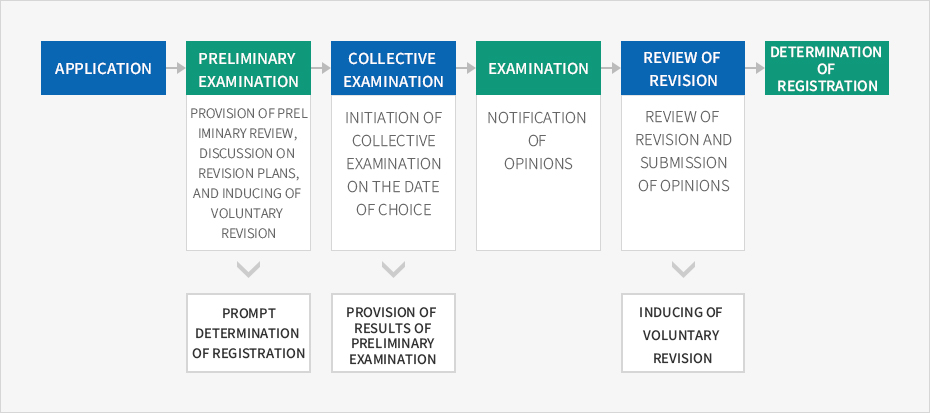
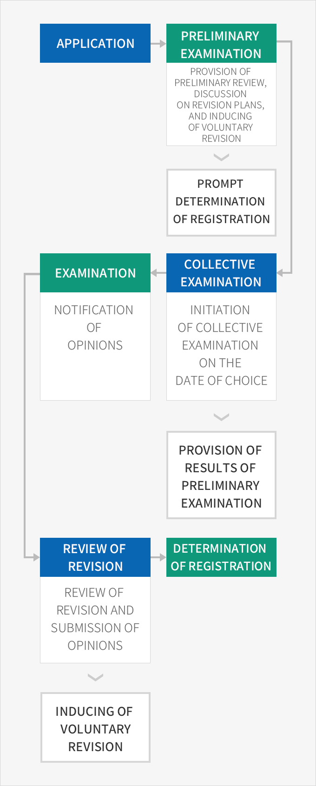

Main Services of the Korea Intellectual Property Office
- Home
- Management·Living
- Intellectual Property Rights
- Main Services of the Korea Intellectual Property Office
With technological innovation and intellectual property policies at the core of the national strategy due to the Fourth Industrial Revolution, the Korean Intellectual Property Office is pursuing policies designed to foster related talent and improve public services in addition to providing reliable examination and judgement services, strengthening patent support and protection, and promoting the commercialization of superior intellectual properties.
Patent Examination System Customized in Three Tracks
The Korea Intellectual Property Office operates a patent examination system customized in three tracks to offer competitive services with regard to the examination period and quality: preferential examinations, general examinations, and late examinations. This system has several advantages in providing the opportunity to secure monopolistic status through the swift acquisition of patents, and securing sufficient time for commercialization through late examinations, which allows adjustment of the examination period when necessary.
- Preferential examinations : Request an investigation of a prior technology at a specialized institution and adjust the processing period for the application
- General examinations : Provide results within the average examination period
- Late examinations : Introduce an application system that allows delayed examinations upon customer request
Patent Examination 3.0
Patent Examination 3.0 is a new paradigm of examination beyond the conventional one-way service, which allows for high-quality patents based on communication between applicants and examiners at every step of the patent examination process, including preliminary examination, collective examination, and review of revisions.
Major Systems at Each Step of Examination



- Application
- Preliminary examination : Provision of preliminary review, discussion on revision plans, and inducing of voluntary revision
- Collective examination : Initiation of collective examination on the date of choice
- Examination : Notification of opinions
- Review of revision : Review of revision and submission of opinions -> Inducing of voluntary revision
- Determination of registration